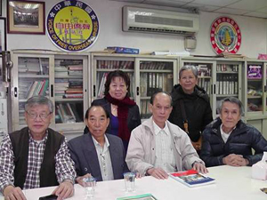

|
|
|
古今文獻 2005年
畫龍點睛 考古漢文化
旅越花縣 畢柱基 又名 徐建安 簡稱 徐安 考載

2012.3.24上午合攝於台北自由僑聲雜誌社 ●前坐自左：自由僑聲編輯總召沈發/美國氣如虹/ 作者徐建安(嶺南漢語考古)/ 詩書畫家黃友佳 ●後立自左：陳蓮英 /馮順好
發前人所未發──講前人所未講 鄭重其事 強調其理 認真其說 中華文化不僅為我國族命脈泉源 更是導發世界科學演進之先河
擬鄭重其事，強調此理，認真證實上句之關鍵重要焦點！使世人認識清楚，免致東西歐彼等無知昧心「不因漁父引，怎得見波濤！」吃果忘卻種果人！既得利益還賣乖。而我輩炎黃子孫則模糊忘諼祖宗曠世智慧成果的偉大貢獻給予世界，所能享受到今後之文化文明暨物質文明的公益天下！
註析：東西歐之科技文明，由來有自，事出有因。算從720年以前 ，不幸中之大幸，因禍得福，繫於中國元朝，成吉思汗之征伐和統治東歐亞如：俄羅斯（即古名羅煞國）、波蘭、捷克、匈牙利、印度……等國時，曾經全把我國數千年文明精華，傾傳遞彼國，特別係將中國四大發明─＞火藥、指南針、造紙術、印刷術等，當時為全世界首創最高科技的發明，［尚有許多領前世界的先進科技文化與物質文明，如渾天儀、地震儀、驗指模術（宋朝首創驗手指紋辦案）、造船術、絲綢錦緞、瓷器、武術功夫、孫子兵法、飲食烹飪術，（對世界所稱即食在中國，對國內而言則食在廣東）誠是精心博大之五千年中華文化，數不勝數也！］帶到東歐諸國，且輾轉再傳入西歐。由此彼等各國獲得中華曠世寶庫科技所驚覺而諸多啟發及帶動東西歐陸各國爭相研發，急趕直追，迎頭超逾而達到如今之科學文明，方才得以脫離之前的落後世界，實拜得之中國四大科技發明之利益所賜。幸至今日科技之全盛發展，憑的是中華五千年輝煌文化文明的光環所照亮全世界每個國度大放光輝異彩！此乃鐵一般事實，不爭之憑證！故云：中華文化不僅為我國族命脈泉源，更是導發世界科學演進之先河！ 反躬自省吾輩當發奮圖強，超越時空，重振聲威，富強中華，爭回本來屬於我們中華民族最先領導權威的優越超前科技創見及發明！勿貽人話柄，謙卑於洋，落為先師後徒，始優後劣之恥辱！枉負中華民族的子孫！國父銘言：吾心信其可行，雖移山填海之難，終有成功之日！
嶺南漢學一脈相承，貫徹始終，演進正統漢文化，且為國族萬變歸宗之中流砥柱。 中華文化最高境界鍾靈毓秀之精粹學術，文藝暨正宗古代漢語、漢音更是先進，漢文化印證於嶺南，鼎盛於嶺南，光大於嶺南，真善美於嶺南 ，輾轉遞嬗承襲歸宗於嶺南，薈萃於廣州西關區之中心及地帶！緣此係碩果僅存，唯一傳真古代中原漢語文、語音之精華，漢文化寶藏！蓋三百年來，中華文化潛在著演化為二個支流：第一支流為北方中華文化，以北京為代表；第二支流為南方中華文化，以嶺南代表。然南方文化既正宗且優秀而演進精闢、精準、簡潔、通順，成古今中外融匯貫通之科學，文明、先進、漢文化！又1800年前東晉時代，漢文化已開始有南北之異，南學簡而華而精，北學深而蕪而晦。北學承襲古漢遺風，只求文字章句之末，義理往往從略；南人喜修辭達理，行文鏗鏘，語句抑揚，一氣呵成，一瀉千里，恢宏磅礡，表裡可觀，雅俗共賞。故文化上南人常輕視北，北人則重南。爰政治上是以北統南，而學術上則南統北！近代尚有一潛異：一般思想生活習慣上北人好論滿清，而通常愛戴炎黃先祖的南人則崇尚漢唐！ 南北在文化暨民情上還有一特殊體現： 北人性格剽悍粗魯，情感淡薄，一般與人交往說話冷漠倔強，短截不詳。相反，文章行寫上則長篇累贅，語句詰詘聱牙，文意誨澀難暸！南人生性寬厚溫良，通常和人交際講話熱心好客，細談豪論，不厭其繁。相對文章揮翰上言簡意賅，語詞鏗鏘流暢，文理精華典雅，一目了然！斯兩者人情物理之差異表現，俱為氣候、環境、生活之天然養成，係無可奈何，無可厚非。例如：北方天氣惡劣，地理嚴峻，物質貧乏，生活受限，民生困苦，經常要與天地拼搏，爭取生存，形成民情強悍、固執、現實、計較。（處事運作上，千篇一律，刻板不靈，皆如機械式流程，墨守成規，一成不變！）況且文化上毋條件深入普及，雖有芻創造而無後改革進修，故民情方才有此現狀使然！惟一大優點者就是作事能刻苦耐勞，堅忍毅力，勇往直前，不成不休！南方天氣溫和，四季如春，土地肥沃，物產豐富，資源充足，民生盈餘裕，優悠輕鬆，充裕時間修文習武，鼎盛普遍。緣有此等豐富資源文化所造就民情濃厚，胸懷豁達，豪爽大方，眼光遠大，思想靈敏，（行事操作通情達理，靈活處置，尤其差錯及時修整，不致累事誤行！）有識大體，重情重理，大義大信，通通融匯於日常生活行動處事中呈現！ 音樂乃世界語言，毋國度分野，無地域隔膜，其質不啻可怡情養性，移風易俗，尚可觀察各地方之文化水平，及其文學修養之造詣程度，然淫樂危害身心，導人沉迷墮落，腐化壯志人生，誤己、誤家、誤國，斯影碟擬印證嶺南昇華漢文化與藝術創作，並於百多載前就有發動性領先，掀起全國各地方舞台藝術，涵蓋國劇即京劇即平劇之革陋存菁，邁進科藝新世紀浪潮，行俱靡不由此。誠中華文化及藝術改革、創新之先河！故粵劇早於一世紀前，在全國戲劇中頗具權威，絕無僅有的在雄稱為廣東大戲之豪氣昂揚，實有其空前動後，大戲之戲勢風範！蓋當獨具首創雄偉廣大之演戲舞台，及機動旋轉式戲台。且配合科技宇宙燈光絢燦燊熠閃爍耀眼，活隱活現，美不勝收之觀感享受。同時，精英演伶陣容強大勢眾。何況佈景冠冕堂皇，七彩繽紛，金碧輝煌，銀河璀璨，場景壯麗，巧奪天工，前所未有之賞心悅目，嘆為觀止！戲服則更進一步精緻化，完美觀感。（早期有代表性之京劇，其服飾及裝扮過於闊陋累贅，鬍鬚髮髻誇張，佈景單調侷促，簡陋不華，戲曲重覆漫疊，歌詞簡俗，無修辭上講究，欠精雅文化水平。在在均表現得凡俗落寂，沉悶鬱卒，了無朝氣生息及輕鬆暢快之感，應唯舞台功架可圈可點）。誠獨具匠心，別出心裁等量身打造，而修飾得體，精緻玲瓏，華麗繽紛，旖旎矜雅。音樂且青出於藍，故詞曲並茂，鍾靈毓秀，旋律婉轉，腔調圓滑，流暢優雅。男調如鐘鳴聲嘯，商沉雄渾，鏗鏘抑揚；女腔則出如谷黃鶯，晰嚦嘹亮，清脆悠揚。相對韻律飄逸，天籟仙音，美妙動聽，悠然陶冶身心，嚮往美好人生。堪稱：此曲只應天上有，人間那得幾回聞名！處處皆顯出觀感並茂，視聽精臻，朝氣蓬勃，輕鬆活潑，幕幕俱扣人心弦，震撼肺腑，精彩絕倫，引人入勝，正是：牡丹綠葉，相得益彰之嶺南極致文化昇華！誠 漢聲絕響猶在粵；廣陵曲散嶺南傳！ 文化振興中流柱，千秋維揚省港天！ 蓋空前盛放，不只廣播國中，尚且風行全球每個旮旯中傳播發揚中華文化！光大嶺南漢學！ 首先探討兩場「武弁」藝術演出之興奮奪目，舞獅序幕，係整個世紀中，南北舞獅之最高技巧卓越之前瞻典範。 1、獅王爭霸 （港片庚辰龍歲千禧年間２０００年代公元二十世紀之巨作。其佈局：萬人空巷、壯烈震撼、萬獅簇擁、萬頭鑽動、鑼鼓喧天、聲威陣勢、恢宏磅礡、一氣呵成、一瀉千里，蓋歌聲雄亮、頓挫抑揚、鏗鏘起疊、蕩氣迴腸，曲詞義賅，音樂振奮，且舞獅功架神乎其技，卓越超群！ ２、南北獅爭雄 （1960年代，即45年前，香港武俠影星關德興乞飾演黃飛鴻之電影紀錄片，古往今來，絕無僅有，無與倫比之南北舞獅，振古鑠今，「一流毋貨」的舞技術存證！ 評語：超前絕後之舞獅極高技術，生猛活躍，閃剔敏捷，出神入化，登峰造極，嘆為觀止，乃百數年來最威武之醒獅演出！誠最突出之前無古人，後無來者的警世絕技也。精研總論全中國南北舞獅之技術及打鑼鼓手法，俱為廣東省更加精進、技巧、動聽、醒目。尤其係舞獅之打鑼鼓絕技，則應以1960年前越南華僑所精改之鑼鼓打法較為：精彩、特出、興奮。 繼續係「文弁」藝術演繹，證徵嶺南漢學文化之精華先進，蓋堤岸中華文化上真、善、美之化境巔峰，倘詳察細考，抽絲剝繭等處處著眼，俱有蹟可循之體驗，在在均呈現獨特超水準全面性文化精粹！蓋有經為據，野史憑證，唐、宋，韓愈、蘇東坡等中原名家，前遊官於嶺南曾驚嘆發言曰：原來嶺南文化特殊優秀！ ＊ 開始序幕唱出，重點簡介，嶺南百粵文藝精華內涵＊ ＃以下3、4兩首為粵語通俗白話歌曲，乃正宗漢音唱出＃ ３、喜辦年貨 ４、除夕闔家歡 3、4兩曲之語音腔調，乃係古代傳真漢音唱出十足清脆悠揚，聲韻神髓之漢韻傳真。有異於第四首二段之北京已演變荒腔走調之漢音唱出；其曲音調高亢剛銳，硬崩無柔，頗含邊疆民族之音調。（緣已混雜蒙滿等族腔調之故）始自1800年前東晉末葉五胡亂華195之久及720年前元朝蒙古統治八十三年，以迄350年前滿州統治267年等間斷性共545年長，期間中華曾三次失國而不亡國，惟中原漢語漢音有某種程度荒腔走音，已非漢唐明朝以前純正漢語音，而邊陲嶺南，山高皇帝遠，外權鞭長莫治，漢語音毋受影響變調，故嶺南語文，音調係正統，傳真祖宗漢語音。 第４首２段同歡共樂過新年（北京之荒腔漢語音唱出）如今若要考究古代中原精粹漢語漢音者，應該去廣東西關區來考古漢語音，則有莫大之發掘也。 ＊以下十二首粵漢歌曲為廣東古典漢聲文言話藝術歌曲昇華詞精義賅，寓教於樂＊ 其歌詞皆文言正宗漢語音唱出。斯文詞語氣音韻神髓堪考證。乃千古經史疏忽失落記載（或封建政治因素忌諱不提），嶺南之原古代正宗中原漢語漢聲之發表印證也！ 鐵般史實：世界三國越、日、韓，以前用漢文化，今尚保留部分漢語文語音，正與廣州語文音調實同出一轍之鐵證。而廣州語、文、音，為傳真中原漢人日常所運用，尤其係古代士大夫與文學家，以及一般智識份子所常用之章詞語氣！ 爰證實以粵語朗誦古文暨唐詩者，則音韻神髓更為逼真、傳神、貼切如古漢韻，不爭之事實！因其為正統漢音！究其粵漢文化細緻精闢，詞菁語賅，義理精準，音韻清暢，優美感足，古今中外，融會貫通！ ５、打金枝 評語：歌聲繚繞，對答流暢，雄辯得體，詞句優雅，駁斥不俗，耐人尋味，諫果回甘。 ６、獅吼記 評語：歌詞諧趣，心曠神怡，抒情暢意，莞爾發笑，開導夫妻，造就家庭。 ７、朱買臣 評語：詞曲惆悵哀傷，賺人熱淚，貴賤無常，發人深省，激發潛能，振作意志。 ８、十二欄杆十二釵 評語：曲調憂怨淒迷，如泣如訴，悲酸苦澀，使人傷感，情緒蕩漾，縈迴腦海。 ９、隋宮十載菱花夢 （隋朝，公元581-618年），評語：音樂輕鬆活潑，歌聲清脆悠揚，舒暢心靈，精神爽朗，吸引忘憂，樂觀人生。誠樂優詞美，上乘妙音，乃輕鬆樂中之最也！ 10、一曲琵琶動漢皇 評語：漢王嬙，字昭君，平生失意，一朝得志，隨即要為國和番之無奈結局，乃犧牲小我，完成大我之民族英雄！ 11、牡丹亭驚夢 評語：音樂歌聲清雅飄逸，韻律陶醉，詩情畫意，超塵脫俗，撲朔迷離，意境神往。有若仙樂縹緲，音韻天成 ，繞樑妙音，漣漪蕩漾，輾轉迴旋，深入腦海。誠不可多得之優雅歌曲！ 12、趙子龍攔江截斗 評語：李凱宜小妹，十一歲女童，志氣昂揚，膽色過人，登台演唱，中規中矩，維妙維肖，才藝出色，超群逾眾，出類拔萃，誠天賦異稟，才氣橫溢，前途未可限量。其歌曲皆以平喉（即男喉）演唱。 13、賣花女 評語：此曲乃流水行雲之歌譜，其音色悲慘蒼涼 ，哀怨憂傷，沉痛憶惻，感人五中，頗易引發觸景傷情，一灑同情熱淚。 （賣花錢女歌曲為1955年代，港星鄭君綿曾到南越西貢，拍攝一齣魂斷吾哥電影中主題曲，劇情為一男子拋妻遠到高棉（柬埔寨）謀生，而病逝於斯，故使妻子長在家鄉待望之淒酸苦痛，並且流落街巷去賣花為生。）（或是綠野仙踪主題曲，因年久糢糊。） 接著是以另類音樂歌曲，擬粵語時代曲來介紹嶺南精華出色之新年喜慶歌曲首選，其音樂與歌聲似和合人潮聲眾之熱烈場面，緊湊密集，實在是普天同慶的歡樂喜曲，輕鬆愉快，節奏逼迫，氣氛磅礡，渾然天成，頗賞身歷其境般觀感享受！快意人生，歡樂新年。故云自1970年代迄今，卅五年來之新年喜慶歌曲中，皆無出其右！而有超前傲後之豪讚也！ 14、新年恭喜 15、吉祥如意 16、花開富貴 17、吉慶滿堂 此四首歌為粵語時代曲格式，以中西樂器伴奏唱出。原文千歲，李寶瑩合唱。 18、茘枝頌 唱腔有若出谷黃鶯，晰嚦嘹亮，清脆悠揚，婉轉高鳴，猶如鐘聲磬嘯，綿綿傳揚。誠近悅遠賞，無分疆界，此曲乃一代伶后紅線女於四十年前於廣州唱出。 19、臥薪嘗膽 一代伶王新馬師曾（鄧永祥）首本曲之一，（七十年前原師承舊馬師曾，舊馬唱腔有如乞兒腔喉，或稱狗仔腔，聽來別有一番風味，詼諧滑稽，幽默怪趣！）此曲於1978年前新馬暨鳳凰女蒞台北演唱。1997年病逝於香港，享年85歲。 20、舞台功架示範 評語：斯為廣東大戲之舞台功架所重點介紹。乃出類拔萃之特色優毓文化表現！比之京劇或崑劇則有過之而無不及，大有「青出於藍，冰出於水」之氣概實質證明也！聖云： 「視野如國，視俗如朝；視藝如文，視群如族」歟！ 21、滄海一聲笑 評語：歌聲雄渾嘹亮，壯闊高鳴，精神振奮。特別是起承轉接之音樂節奏，氣勢滔滔，恢宏磅礡，震撼山川，實鬼斧神工，渾然天成，巧冠世技！再者：琴音簫聲之精妙，層出不窮，起伏不爽。須臾高山流水，叮噹鏗鏘，飄逸悠揚，思古情牽，江山縈懷！倏忽萬馬奔騰，排山倒海，洶湧澎湃，氣壯山河，襯托造化！驀然江河直瀉，轉環若落霞孤騖，如泣如訴，潸啜嘹嘵，悲哀憂怨，人間何世！正是天籟霄音，仙樂飄飄，超塵脫俗，出神入化。高亢間撼蕩山嶽，動搖海川，低落時淒怨哀愁，感時觸世，此中氣勢與沉淪可謂：驚天地而泣鬼神！嘆蒼生而欽造化！毓靈妙樂，神來之音，世間絕響也！ 22、孫秀才轉運 唱詞通俗，俗而不陋，歌曲奇崛，崛而生動，輕鬆爽趣，人生百態！何泛出此水平？蓋每況愈下，於今尤厲行。政者，豈辭其咎哉？ 古曲者 涵蓋四方面之精華文化呈現：一、歌詞精雅義賅，寓教於樂。二、音樂優美韻妙，引人入勝。三、內涵移風易俗，導世昇華。四、有警世教化之義！ 時代曲者 雖是退化，尚能代表一個時代中之特色文化，不無小補之微薄文學價值觀存在！ 流行曲者 甚而下之，奈乃時下淺薄文明衍生過渡性「俗樂」 ，不登大雅，難當時間考驗而淘汰，恰似船過水無痕，了無影蹟。 既無提昇文化水平，更使往下沉淪，且其簡直不似唱歌，猶似朗誦或念書等表達，缺乏一種深度文化藝術之觀感內涵！
古代中原漢文化之語文暨聲音 輾轉遞嬗，承襲歸宗於嶺南 考究正統中原精粹漢語漢音， 傳承貫徹演進於嶺南廣州西關區之鐵證憑據 緣西關區為二千多年來，中原漢人南遷之精英，軍、政、文儒 、商賈，文化薈萃之中心地帶。故文化素來皆優秀拔萃之地方。爰其語文及聲音，腔調俱係完整傳真之古代中原漢語文和音韻，尤與唐代語文暨音色更加雷同真實感，比較於全國各省，尤其以北京已演變荒腔走調之漢語文語音更為正宗先進。（蓋其原韻嬗離，正音質混。俱緣漢史上曾三次失國而不亡國之朝代法統遞變於異族所致。惟獨是精深博大之道統漢文化仍然正常運轉，而萬變不離宗，且融合同化為一體大中華民族！祇係中原區域之漢文化稍有混雜替凌，已非原先明朝溯上漢唐時代之正宗漢語漢音矣！）萬幸禮失而求諸於野，諺云：毋怕毋識貨，最怕貨比貨。則如單眼漢相親，一目了然也！有道：由來有自，事出有因。倘仔細般抽絲剝繭恁欣賞觀察，嶺南漢語精巧先進之行文和語言文法之精準、正確、簡潔、通順，與文藝音樂歌曲之音韻旋律，以及曲文藻詞遣句之極致。則有意想超前之啟悟收穫，而會由衷地逐步同意以上之論證。（尚有其他先進文化文明，以及日常生活文化上之精良卓越方面呈現，當可觀微知著，擬作充實考據鐵證。） 聖云：視野知國，視俗知朝，視藝知文，視群知族之縮影也！ 孔曰：移風易俗，莫善於樂。往古政治，禮樂並重，樂則製作歌曲為尚。歌曲之感人既深，其治世之功也廣，聆韶樂之遺音，足悟巴人之濫調；是知歌曲之為用，在疏浮鎮穢，矯枉正偽，淨化人心，澡雪精神，通淪臟腑，毓沐氣質，導性情於和善安舒之域，抑制輕佻狂躁之行止。故樂優詞美，斯為上乘！嶺南曲藝及文詞當之無愧！本影音碟之文化內涵愛文憫族，用心良苦，係留待考古家及有興致或好奇者，與請國人宗族探溯尋源暨傳子待孫予以深入認識之考據。擬作族群萬變不離宗之毓沐啟發！免致後輩數典忘宗，否本諼源，且反戟倒戈之流弊！蓋有文化即有將來，有國族倫理有一切事物，毋文化不啻無將來，豈遑論宗祖家族其他。 23、(11)牡丹亭驚夢 兩首同一劇情，惟演繹各異其趣，（即造作不同）各有千秋，不分伯仲！ 24、紫釵記之拾釵 評語：李益與霍小玉之才子佳人巧遇過程 ，其音樂和唱詞均具特色，優美柔和，繞樑餘音，縈迴蕩漾，不勝愉悅！ 25、賣油郎獨佔花魁 評語：嬌姿婀娜，醉態惘然，神志闌珊 ，辛酸匿藏，苦不言宣，楚楚堪憫，人見人憐！誠：娼花酒債歡埸女，色笑迎人強歡顏面！東家宴罷西家請，無奈困境逼人翻！ 26、鳳閣恩仇未了情 評語：音樂與鑼「金查」(即鐃字)聲，美妙雄渾，轟隆磅礡，別開生面，另具一格，鏗鏘悅耳，振興心神 ，為百聽不厭的歌曲！ 27、家和萬事興 28、一水隔天涯 29、榴槤飄香 30、故鄉的雨 評語：此四首歌乃卅五年前之粵語時代曲，詞曲共茂，雖無古典粵曲恁優雅妙音，惟尚仍不俗，還有可取，不似近年的流行曲般文詞凡俗，韻味無聊，味同嚼蠟，淡澀無滋，既無提昇文化，更使往下沉淪，不勝唏噓！誠：黃鍾毀棄，瓦釜雷鳴！昇華弗習，陋俗泛衍！故無古典歌曲之優美文學造詣，暨雅樂鴻音等繞樑三日，迴旋腦際，千百遍聽之意猶未足，正是興致神往，魂縈勝譜，嚮思樂韻之欣賞意境！ 31、楚留香片中無花大師與佛仗偈 (鄭少秋與汪明荃主演) 評語：和尚對話與講佛偈，也不失為漢儒文學之運用。（並非梵語之文化，也非梵文之旨意。蓋千多年來，俱為佛教融入漢學中所演繹。爰形成中國式之佛學，而非原始之印度佛教。）故話中哲理義賅，發人深省，啟悟人生。漢學之造就也！此中和尚，頗具氣質法相，實有深度漢文化修養之宗教人物。惟聖賢囑云：「僧為愚民猶可訓，妖為鬼惑可成災！」蓋謂宗教乃愚民之行為。再如百年前德國有名文學家曾說：宗教是人民的鴉片。故云誤盡蒼生，害人子弟，導俗離世，又聞好逸代勞，逃避現實，坐享眾成，係社會寄生蟲。且看世界所有迷信之國度者，俱為落後之民族，貧苦之人民，愚昧文塞之群眾，凡事造作，不問蒼生問鬼神！故理應振作人生，發奮圖強生活，開竅聰明智慧，豁達開明思想，乃儒家所積極提倡處世為人攀登幸福之正確實際真理，放諸四海而皆準！誠世人行止，見仁見智，慧者不迷，愚夫愚婦，文儒教化，怪力亂神，敬而遠之！排除迷信，開啟「理解智、判斷能、分析力」之門！生活中不能游離於社會之外，無出世入世之分，應以人事當，勿作神佛迷，宗教，理智般接觸可勉作信仰，倘矇昧沉網投入即癡愚迷信。幻想：似是而非，有的沒的，天馬行空，高不可攀，海市蜃樓，遙不可及，萬家燈火，可望不可即等等的虛景。 32、帝女花劇終段之香夭 （唐滌生乃1950年代之嶺南優等編劇家、組曲家、文學家；其製作最負盛名之帝女花與再世紅梅記之戲劇瑰寶，實在屢看不厭，百聽不膩之曲藝名作也。斯劇情大義大信，且其曲詞萬當精緻優雅，獨具文學之巔峰價值。同時，音樂編排得相當優美精妙，魂繫神往，其樂曲為妝台秋思古迫，可謂千秋流長之曲藝戲寶也！）評語：劇情忠於國貞於情，忠貞兩並全！世事有可為有不可為，蓋大義大信之為國為民者，可為也！倘執昧於小義小信鄉土私情，草根陋俗，民粹意念而蓄意違悖民族大義者，則淪於賣國、敗族、忘本之奸徒草莽歟！鄉愿民粹也！膚淺幼稚無知之矣！ 嶺南昇華漢文化，就於重情重理，大義大信， 為所當為，彰顯全面大道中，發揚光大！ 誠：任重道遠提昇國粹中華文化導航者！
|
|